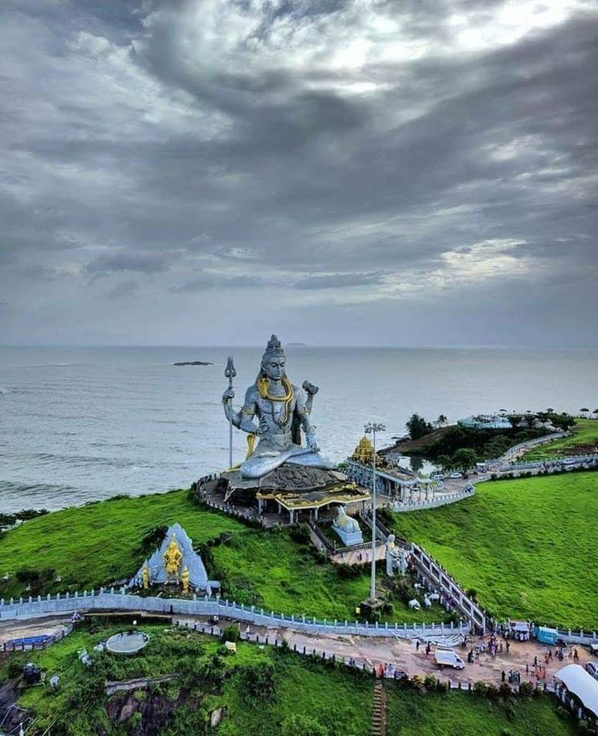

"Embrace Peace and Devotion at Shivashivohm Temple – A Sacred Space for the Soul"
Shivashivohm Temple is a serene and spiritually significant temple in Bangalore dedicated to Lord Shiva. It is known for its peaceful environment, ancient rituals, and beautiful architecture.The temple is rooted in traditional Shaiva worship and is frequented by devotees seeking peace and spiritual enlightenment.
Architectural Beauty
Design: The temple blends traditional Dravidian and modern architectural styles, featuring a towering spire (Shikhara) and an intricately carved sanctum sanctorum.
Lighting and Night View:the building is beautifully illuminated at night and makes for a stunning view, a popular sight for tourists and photographers.
Temple Interiors: Inside, the temple is home to stunning idols of Lord Shiva, Parvati, and other deities, with detailed carvings and serene surroundings.
Key Attractions
Shiva Lingam: The main attraction is the grand Shiva Lingam, an important symbol in Shaivism, representing Lord Shiva’s presence.
Meditation Hall: The temple has a designated space for meditation, allowing visitors to sit in peace and connect with their inner selves.
Cultural Events: Regular cultural programs such as classical music performances, religious discourses, and dance programs are held at the temple.
How To Reach
By Metro: indiranagar metro Station (green Line).
By Bus: Multiple BMTC routes pass by the temple.
By Car: Parking available near entrance.
Events and Festivals
Maha Shivaratri: The biggest celebration at the temple, with special prayers, chanting, and community events held throughout the night.
Annual Pujas and Kumbhabhishekam: Special ceremonies that attract large crowds during auspicious times.
Attend a Lecture: Participate in Bhagavad Gita classes.
Things to Do
Explore the temple Interiors.
Offer Prayers: Participate in daily rituals and pujas, including Rudra Abhishekam.
Meditate: Spend time in the temple's meditation hall for inner peace.
Attend Cultural Events: Enjoy cultural programs that celebrate Lord Shiva’s life and teachings.
Visitor Information
Best Time to Visit: Early mornings and evenings are ideal for a peaceful visit. Special events and festivals like Maha Shivaratri are perfect for those seeking a deeper spiritual experience.
Timings: Typically open from 6:00 AM to 8:00 PM, but timings may vary during festivals.
Local Cuisine
Temple Prasadam: Enjoy the temple’s prasadam (sacred food offerings), typically served after rituals.
Nearby Eateries: Explore local South Indian cuisine at nearby restaurants like MTR and VV Puram Food Street.
Visitor Tips
Respect the Sanctity: Silence and reverence are important when visiting the temple.
Photography: Allowed outside but limited inside the temple.
Donation: Visitors can contribute to temple maintenance or participate in seva (service) activities.